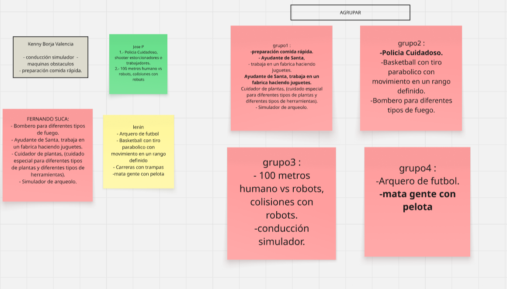
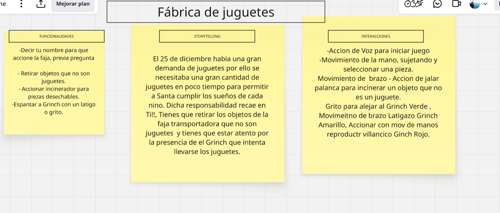
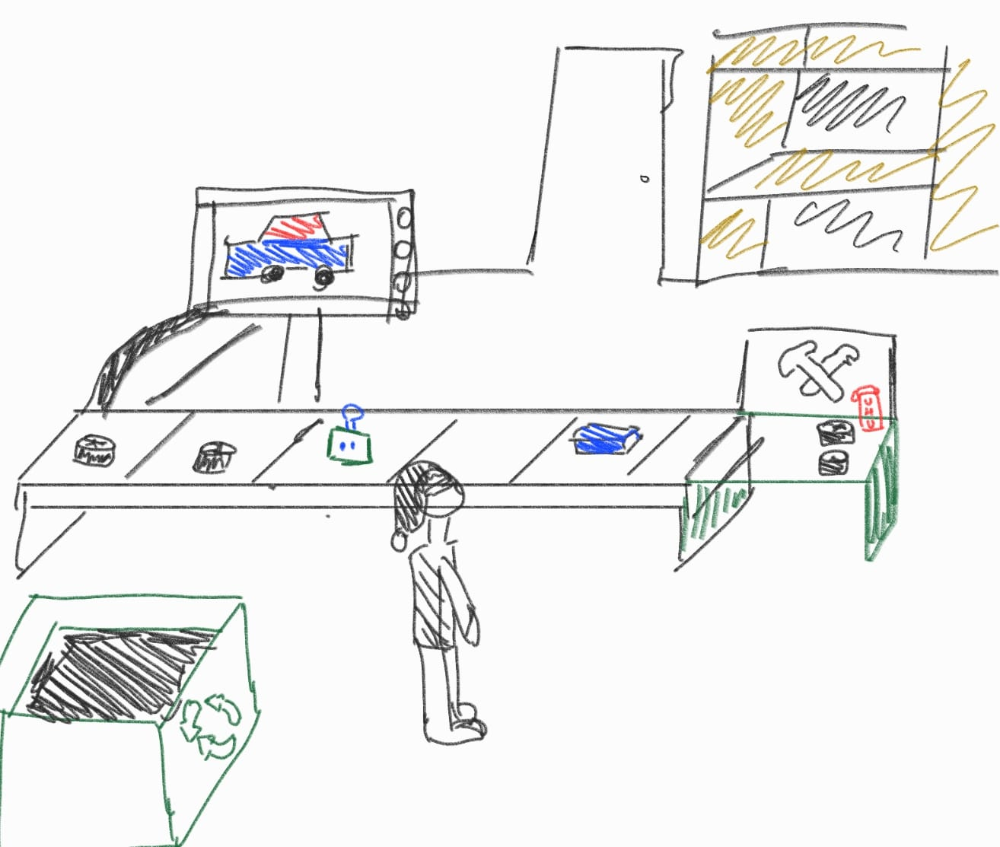
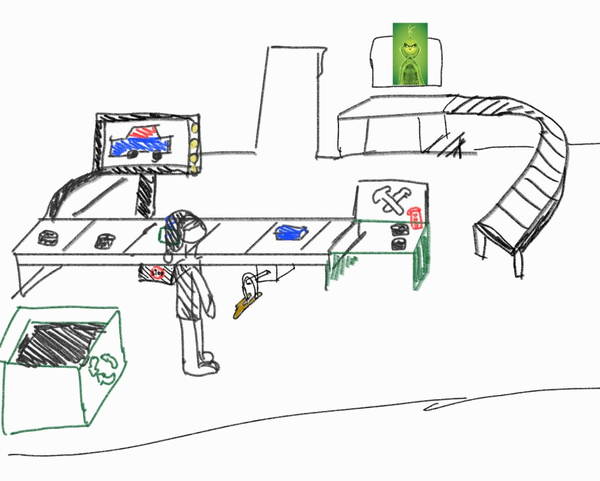

Visibilidad
Lo importante aparece cuando importa. Estado, objetivo y próximo paso siempre a la vista.
EXPERIENCIAS INTERACTIVAS / LATAM
InteractionTUMI es un estudio de diseño, juego y tecnología. Tomamos cultura, curiosidad y código para convertirlos en momentos que las personas quieren habitar.
TUMI / 01
un símbolo que se ensambla contigo
01 / EL STUDIO
Se descubren. Por eso construimos experiencias con intención humana: visibles, comprensibles, seguras y con una respuesta para cada acción.
Conoce nuestro sistema ↗02 / DISEÑO CON PROPÓSITO
Lo importante aparece cuando importa. Estado, objetivo y próximo paso siempre a la vista.
Cada gesto recibe una respuesta clara: visual, sonora o háptica, sin dejar dudas.
Reducimos el error guiando las posibilidades correctas en el momento exacto.
La forma cuenta qué hacer: agarrar, rotar, construir o descubrir se entiende al mirar.
La acción y el resultado mantienen una relación natural, directa y memorable.
03 / PROJECTS
01—01
Una experiencia XR de ritmo rápido: construyes juguetes, coordinas tus manos y defiendes la fábrica antes de que el Grinch arruine la Navidad.
Ver proceso creativoLas piezas aparecen en una cinta transportadora y el jugador debe reconocerlas, tomarlas y ubicarlas en el ensamblaje correcto. Las alertas de la fábrica hacen visible el peligro, las guías espaciales muestran dónde actuar y el feedback celebra cada juguete terminado. Cuando el Grinch se acerca, la resortera pasa a ser la herramienta de defensa.
04 / LLUVIA DE IDEAS
Exploramos distintas propuestas de juego, las agrupamos por temática y evaluamos cuáles podían convertirse en una experiencia clara, interactiva y divertida.
01 EXPLORAR Y AGRUPAR
El equipo reunió ideas relacionadas con simulación, movimiento, precisión y trabajo dentro de una fábrica. Al compararlas, aparecieron patrones que ayudaron a visualizar el potencial de cada concepto.

02 SELECCIONAR Y DESARROLLAR
La propuesta seleccionada convierte al jugador en ayudante de Santa. Su misión es supervisar la fábrica, retirar de la faja los objetos que no sean juguetes y evitar que el Grinch se lleve la producción navideña.

05 / STORYTELLING
Dos decisiones de diseño transformaron una tarea de armado en una experiencia clara, dinámica y con propósito.
01 ORIENTACIÓN Y ENSAMBLAJE
Se creó una cinta transportadora con las piezas del juguete y una pantalla que muestra el modelo terminado. Así, el jugador puede anticipar qué debe armar antes de tocar cada pieza.
También se agregó un estante para colocar los juguetes completados. Este espacio hace visible el progreso y comunica con claridad cuándo termina cada ciclo de ensamblaje.

02 ATENCIÓN Y DEFENSA
En la segunda propuesta se incorporó al Grinch como una amenaza visible. Su presencia atrae la atención del jugador y añade tensión sin interrumpir la tarea principal de construcción.
La nueva ruta de la cinta y la herramienta de defensa exigen alternar entre ensamblar y proteger la fábrica. Esto refuerza la concentración, la toma de decisiones y la respuesta ante cambios inesperados.

06 / COMUNIDAD
Una galería en movimiento con los momentos, pruebas y reacciones que dejó la experiencia.
REGISTRO EN MOVIMIENTO
Cada video se incorpora automáticamente a esta galería al recargar la página.
Haz clic para abrir el video ↗
Haz clic para abrir el video ↗
Haz clic para abrir el video ↗
Haz clic para abrir el video ↗
Haz clic para abrir el video ↗
Haz clic para abrir el video ↗
Haz clic para abrir el video ↗
Haz clic para abrir el video ↗
Haz clic para abrir el video ↗
Haz clic para abrir el video ↗
Haz clic para abrir el video ↗
Haz clic para abrir el video ↗
07 / GAMEPLAY DESTACADO
Una alumna de Arte pone a prueba Fábrica de Navidad: Defensa Anti‑Grinch. La sesión muestra cómo descubre los retos, utiliza los gestos y se adapta al ritmo de la experiencia XR.
Exploración real de las mecánicas de ensamblaje, selección y respuesta dentro de la fábrica.
08 / HALLAZGOS DE JUGABILIDAD
Convertimos los patrones observados durante las pruebas en decisiones concretas de diseño.
Las frases son síntesis en primera persona; no transcripciones literales.
“Al comenzar, no entendía cuál era el juguete que tenía que construir.”
Se añadió una pantalla guía con la imagen del juguete objetivo, visible durante todo el armado.
“Las piezas llegaban y no sabía en qué orden debía utilizarlas.”
Se reorganizó el recorrido en la cinta transportadora y el ritmo de aparición para avanzar paso a paso.
“Terminaba de armar el juguete, pero no encontraba dónde entregarlo.”
Se incorporó un estante de entrega visible junto a la zona de trabajo para los juguetes terminados.
“Colocaba una pieza y no estaba seguro de que el juego la hubiera aceptado.”
Cada acción correcta o incorrecta recibió respuesta visual, sonora y háptica.
“Me concentraba en el juguete y no notaba cuándo se acercaba el Grinch.”
Se mejoró la visibilidad del Grinch y se añadieron señales que anticipan su llegada.
“Veía el peligro, pero no sabía qué herramienta usar ni qué movimiento hacer.”
La herramienta de defensa se hizo accesible y se vinculó a un gesto directo del brazo.
“Intentaba recordar la voz, las manos y la palanca al mismo tiempo.”
Las indicaciones se dividieron por momentos: voz, interacción manual y palanca.
“No terminaba una acción antes de que apareciera el siguiente problema.”
Se equilibraron la velocidad de la cinta y la frecuencia de eventos para elevar el reto progresivamente.
“Al mover las manos tomaba piezas equivocadas o accionaba elementos sin querer.”
Se añadieron restricciones de alcance y validaciones para responder solo en la zona y el momento correctos.
“Esperaba que el juego reaccionara de una forma, pero hacía otra cosa.”
Se reforzó el mapping: agarrar con las manos, jalar la palanca y defender con el brazo.
09 / LAS PERSONAS
UX Research & Narrative
Convierte observaciones de usuarios en interacciones claras, emocionantes y medibles.
XR & Technical Design
Diseña sistemas espaciales que se sienten naturales antes de que alguien tenga que explicarlos.
Game Systems & Interaction
Conecta reglas, ritmo y respuesta para que cada reto del juego se sienta justo y emocionante.
Art Direction
Da forma a mundos memorables donde la identidad visual también guía cada decisión.